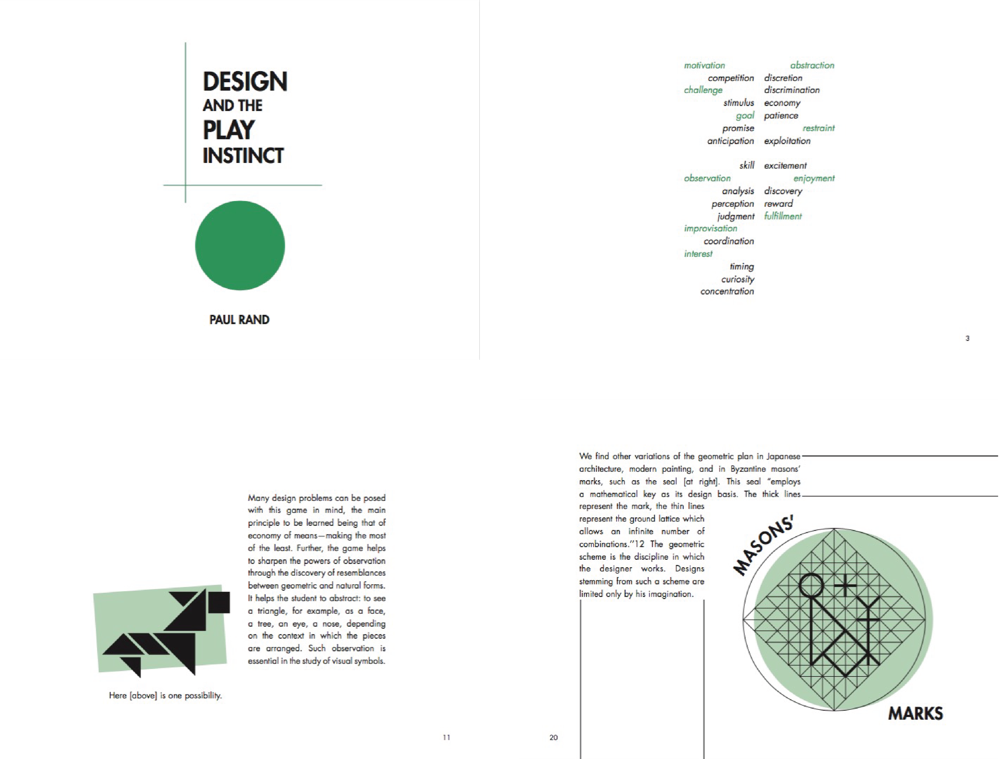

Challenge: Given the images and written material from Paul Rand’s Design and the Play
Instinct, design a book focusing on layout, readability and typographical hierarchy with
a consistent theme.
Solution: Rand’s text is about play within defined limitations so I maintained that theme
throughout my design by incorporating some sort of playful element alongside more structural elements.